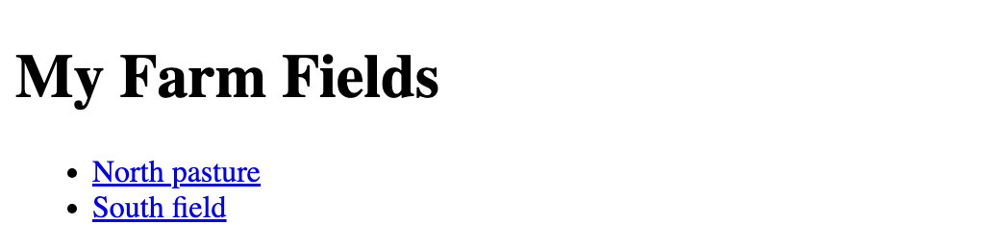
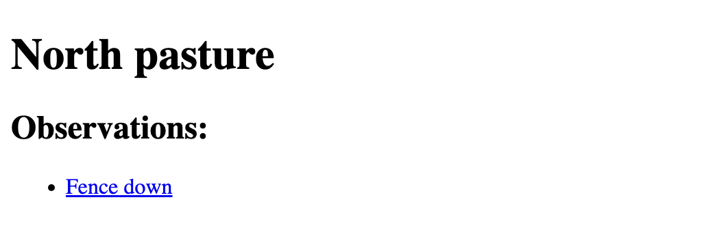
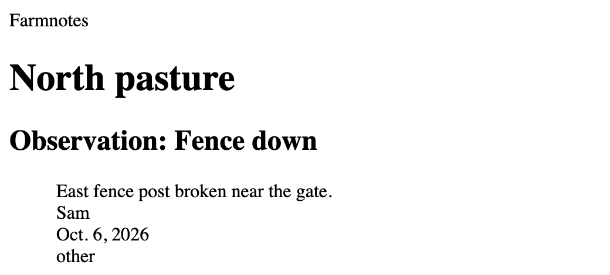
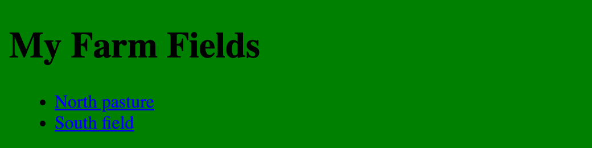

Django Continued
Module 4 - Web Applications
Lecture 4.3
ASM 532, Introduction to Ag Informatics
Ankita Raturi, ankita@purdue.edu
Lecture Outline
Implement views, templates, and data in Django.
- Views and URL routing
- Templates and static files
- Software development tools: Django
- Languages: Python, HTML, CSS
Goal: Design, scope, and implement a web app MVP.
Structure of a Django Application

img src: MDN, Django introduction.
Code color key
| Color | Marks | For example |
|---|---|---|
| red | Python keywords | def, class, return |
| green | functions, methods and classes: things you call | print(), __init__(), Animal |
| blue | arguments: the values you pass in | name in
greet(name)
|
| purple | attributes: the data an object holds and commands you type in the terminal |
self.name, pip install |
| pink | files, folders and local URLs | views.py, http://127.0.0.1:8000/ |
Three views for farmnotes
We will create a total of three views, or web pages, for our site:
- Field
indexpage - displays all the fields in my farm. - Field
notespage - displays all the observations related to a particular field. - A Field
observationpage - displays the details of a specific observation related to a field.
farmnotes site map
flowchart LR
accTitle: farmnotes site map, annotated
accDescr: Three pages. The index page at /farmnotes/ uses the index view, the index.html template and the Field model, and links to each field's notes page. The notes page at /farmnotes/field_id/ uses the notes view, notes.html, and the Field and Observation models, and links to each observation page. The observation page at /farmnotes/field_id/observation_id/ uses the observation view, observation.html and the Observation model.
A["index
/farmnotes/
view: index()
template: index.html
model: Field"] --> B["notes
/farmnotes/field_id/
view: notes()
template: notes.html
models: Field, Observation"]
B --> C["observation
/farmnotes/field_id/observation_id/
view: observation()
template: observation.html
model: Observation"]
Create a View
Recap from Lecture 4.2: today we build them.
- View function will pull data from model.
- View function will render template.
urls.pywill route view function -> template.
References
- How to write a view function: https://docs.djangoproject.com/en/5.2/topics/http/views/
- View shortcuts: https://docs.djangoproject.com/en/5.2/topics/http/shortcuts/
Stub views:
farmnotes/views.py
Set up every page's URL before the page exists.
- A "stub" is a small piece of code that does a minimal set of actions.
- Stubs let us set up the URLs for each of the pages before the pages exist.
Routing:
farmnotes/urls.py
Point each URL to its view.
- Try
http://127.0.0.1:8000/farmnotes/1/andhttp://127.0.0.1:8000/farmnotes/1/1/. - Routing is how we point the HTTP request from the user to the correct Django view.
Create a Template
- Template presents your data in HTML.
- Works just like any other HTML page. Can attach CSS!
- Template uses the variables the view function passes to it.
References
- Template: https://docs.djangoproject.com/en/5.2/topics/templates/
- Template language: https://docs.djangoproject.com/en/5.2/ref/templates/language/
Where templates live
- Create
templates/inside thefarmnotesapp folder, and another folder inside it named after the app. - Because of how the Django template loader works:
farmnotes/templates/farmnotes/index.html - Skip the inner folder and you get
TemplateDoesNotExist: the sample bug in yourdebug-log.md.
A template:
index.html
{% for %} ... {% endfor %}: tags perform some logic, e.g., loops.{{ field.name }}: anything inside{{ }}is a variable./farmnotes/{{ field.id }}/follows the format ofurls.py: it points to thenotesview.
Render the template:
farmnotes/views.py
The view pulls data from the model and hands it to a template.
render()has three arguments: therequest, the template's name, and a dictionary of objects to pass to the template.- That's how the template can use
latest_fields.
Result: http://127.0.0.1:8000/farmnotes/

404 page not found errors
The long way:
- The
tryclause, andget(), which finds an object by its primary key:pk=field_id.
404 page not found errors
The Django shortcut:
- This is a common enough thing that there is a Django shortcut function for it.
Follow the foreign key:
notes.html
field.observation_set: the foreign key onObservationlets a field find all its observations.
Result: http://127.0.0.1:8000/farmnotes/1/

View a single observation
Result: http://127.0.0.1:8000/farmnotes/1/1/

Styling your web app:
static/farmnotes/style.css
Static files: CSS, images, and JavaScript that every page can load.
Link the style sheet in the <head> of each template:
- The same Django quirk as templates:
farmnotes/static/farmnotes/.
Result: http://127.0.0.1:8000/farmnotes/

Same page, one CSS rule. In Module 5, you will use a CSS framework (Bootstrap) instead.
Learn More
- Writing views: https://docs.djangoproject.com/en/5.2/topics/http/views/
- Templates: https://docs.djangoproject.com/en/5.2/topics/templates/
- The template language: https://docs.djangoproject.com/en/5.2/ref/templates/language/
- Static files (CSS, images, JavaScript): https://docs.djangoproject.com/en/5.2/howto/static-files/
- Mozilla Django overview: MDN
- Full Django documentation (with tutorials!): https://docs.djangoproject.com/en/5.2/
Questions?
License
-

Introduction to Agricultural Informatics Course by Ankita Raturi, Purdue University is licensed under a Creative Commons Attribution-NonCommercial-ShareAlike 4.0 International License.
- You are free to:
- Share — copy and redistribute the material in any medium or format
- Adapt — remix, transform, and build upon the material
- Under the following terms:
- Attribution — You must give appropriate credit, provide a link to the license, and indicate if changes were made. You may do so in any reasonable manner, but not in any way that suggests the licensor endorses you or your use.
- NonCommercial — You may not use the material for commercial purposes.
- ShareAlike — If you remix, transform, or build upon the material, you must distribute your contributions under the same license as the original.
- No additional restrictions — You may not apply legal terms or technological measures that legally restrict others from doing anything the license permits.